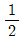
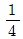
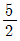
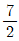
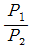
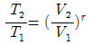
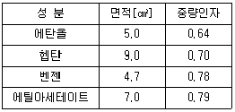
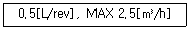

가스기사 (2006-08-06 기출문제)
1과목: 가스유체역학
1. 유체의 성질에 대한 설명 중 옳지 않은 것은?
- 유체란 뒤틀림(distortion)에 대하여 영구적으로 저항하지 않는 물질이다.
- 일정량의 유체를 변형시켜 보면 변형 중에 전단응력(shear stress)이 나타난다.
- 전단응력의 크기는 유체의 점도와 미끄러짐 속도에 따라 달라진다.
- 새로운 모양이 형성되어도 전단응력은 소멸되지 않는다.
(정답률: 25%)

2. 원심식 압축기와 비교한 왕복식 압축기의 특징에 대한 설명으로 가장 거리가 먼 것은?
- 압력비가 낮다.
- 송출압력변화에따라 풍량의 변화가 적다.
- 회전속도가 늦다.
- 송출량이 맥동적이므로 공기탱크를 필요로 한다.
(정답률: 알수없음)
3. 내경이 2.22×10-3m, 길이가 0.317m인 작은 관에 0.275m/s의 속도로 유체가 층류로 흐를 때 유량은? (단, 이때 점도는 1.13×10-3Paㆍs, 액체의 밀도는 875㎏/m3이다.)
- 1.06×10-6m3/s
- 0.27m3/s
- 5.23×10-5m3/s
- 2.13×10-6m3/s
(정답률: 50%)
4. 터보압축기의 특징에 대한 설명으로 가장 거리가 먼 것은?
- 용량제어가 쉽고 범위도 넓다.
- 무급유식이다.
- 고속회전이 가능하다.
- 설치면적이 적다.
(정답률: 30%)
5. 강관 속을 물이 흐를 때 내부의 어느 한 지점에서의 전단력이 만약 2N이라 하고, 그 지점의 면적이 250cm2이라고 하면 이 지점의 전단응력은 몇 ㎏/mㆍs2인가?
- 0.4
- 0.8
- 40
- 80
(정답률: 알수없음)
6. 점성계수의 차원에 해당하는 것은?
- [ML-1T-1]
- [MLT-1]
- [ML-1T-2]
- [MLT-2]
(정답률: 47%)
7. 관로의 에너지 손실에 대한 설명으로 옳지 않은 것은?
- 관로 안을 유체가 흐를 때 기계적 에너지는 하류로 내려가면서 감소한다.
- 베르누이정리가 성립한다.
- 기계적 에너지의 손실은 압력강하로 나타난다.
- 관로에서는 입구나 출구 또는 관로 삽입기구에 의해 에너지 손실이 일어난다.
(정답률: 17%)
8. 어떤 물체가 400m/s의 속도로 상온의 공기 속을 지나갈 때 물체표면의 온도 증가는 이론상 약 몇 K인가? (단, 공기의 기체상수 R은 29.27㎏ㆍm/㎏ㆍK, 비열비는 k는 1.4이다.)
- 68.4
- 79.7
- 92.4
- 122.5
(정답률: 20%)
9. 표준상태의 대기 중에서 음속은 약 얼마인가? (단, 비열비 k : 1.4, g=9.8m/s2로 한다.)
- 311m/s
- 321m/s
- 331m/s
- 341m/s
(정답률: 29%)
10. 오스왈드 점도계를 사용하여 어떤 액체의 점도를 측정하려고 시간을 측정했더니 15초가 소요되었고, 같은 온도에서 물은 3초였다면, 시료 액체의 점도(cP)는? (단, 물의 점도는 1cP이다.)
- 3
- 5
- 10
- 20
(정답률: 63%)
11. 다음 중 물리량의 단위를 잘못 표현한 것은?
- 표면장력 : N/m
- 운동량 : ㎏ㆍm/s
- 전단응력 : N/m2
- 일 : N/m3
(정답률: 53%)
12. 경계층에 대한 설명으로 옳은 것은?
- 경계층 내의 속도 구배는 경계층 밖에서의 속도구배보다 적다.
- 층류층의 두께는 Re1/5에 비래한다.
- 경계층 밖에서는 비점성유동이다.
- 평판의 임계 레이놀즈 수는 2,100과 4,000이다.
(정답률: 10%)
13. 유체의 흐름 방향을 변화시킬 수 있고, 섬세한 유량 조절이 가능한 밸브로 가장 적당한 것은?
- 게이트 밸브
- 글로우브 밸브
- 체크 밸브
- 코크 밸브
(정답률: 알수없음)
14. 내경 5㎝ 파이프 내에서 비압축성 유체의 유속이 5m/s이면 내경을 2.5㎝로 축소하였을 때의 유속은?
- 5m/s
- 10m/s
- 20m/s
- 50m/s
(정답률: 알수없음)
15. 무게가 2,500㎏f인 액체의 체적이 5m3이다. 이 액체의 비중량(㎏f/m3)과 비체적(m3/㎏f)은 각각 얼마인가?
- 비중량 : 500 비체적 : 0.002
- 비중량 : 500 비체적 : 0.02
- 비중량 : 250 비체적 : 50
- 비중량 : 25 비체적 : 500
(정답률: 47%)
16. 튜빙의 벽두께는 BWG(Birmingham Wire Gauge)번호로 나타내는데 다음 중 어느 것이 가장 두꺼운 것인가?
- 10
- 12
- 16
- 18
(정답률: 19%)
17. 5㎏f/cm2ㆍabs에서 밀도가 1.425㎏/m3인 산소의 온도는 약 몇 ℃인가? (단, 산소는 이상기체로 가정하고 기체상수 R= 26.50㎏ㆍm/㎏ㆍK이다.)
- 1,⑤1
- 1,148
- 1,324
- 1,512
(정답률: 알수없음)
18. 뉴톤 유체(Newtonian fluid)가 원관 내를 층류 흐름으로 흐르고 있다. 관내의 최대속도 Umax와 평균속도 V와의 관계 V/Umax는?
- 2
- 1
- 0.5
- 0.1
(정답률: 70%)
19. 완전히 난류구역에 있는 거친 관에서의 손실수두는? (단, f는 관마찰계수, V는 평균유속, Re는 레이놀즈 수, P는 압력, μ는 점성계수, ρ는 밀도이다.)
- 단지 Re에 좌우된다.
- 단지 f, V에 좌우된다.
- 주로 μ, ρ에 좌우된다.
- 단지 P에 좌우된다.
(정답률: 24%)
20. 마하수가 1보다 작을때 유체를 빠르게 흐르게 하여고 한다. 이 때 다음 설명 중 옳은 것은?
- 단면적을 감소시킨다.
- 단면적을 증가시킨다.
- 단면적을 일정하게 유지시킨다.
- 단면적과는 상관 없으므로 유체의 점도를 증가시킨다.
(정답률: 47%)
2과목: 연소공학
21. 탄화수소(CmHn) 1Nm3이 완전연소될 때 나오는 탄산가스의 양은 얼마인가?

m- m
- m +

n  m
m
(정답률: 65%)
22. 다음 기체의 연소 반응 중 가스 단위체적당(Nm3) 발열량이 가장 큰 것은?
- H2 +
 O2 → H2O
O2 → H2O - C2H2 +

O2 → 2CO2+H2O - C2H6 +

O2 → 2CO2+3H2O - CO +
 O2 → CO2
O2 → CO2
(정답률: 47%)
23. 오토사이클에 대한 일반적인 설명 중 옳지 않은 것은?
- 열효율은 압축비에 대한 함수이다.
- 압축비가 커지면 열효율을 작아진다.
- 열효율은 공기표준 사이클보다 낮다.
- 이상연소에 의해 열효율은 크게 제한을 받는다.
(정답률: 47%)
24. 연료에 고정 탄소가 많이 함유되어 있을 때 발생되는 현상으로 옳은 것은?
- 매연 발생이 많다.
- 발열량이 높아진다.
- 연소 효과가 나쁘다.
- 열손실을 초래한다.
(정답률: 59%)
25. 다음 중 임계압력을 가장 잘 표현한 것은?
- 액체가 증발하기 시작할대의 압력을 말한다.
- 액체가 비등점에 도달했을 때의 압력을 말한다.
- 액체, 기체, 고체가 공존할 수 있는 최소 압력을 말한다.
- 임계온도에서 기체를 액화시키는데 필요한 최저의 압력을 말한다.
(정답률: 30%)
26. 이상기체에 대한 상호 관계식을 나타낸 것 중 옳지 않은 것은? (단, U는 내부에너지, Q는 열, W는 일, T는 온도, P는 압력, V는 부피, Cv는 정적열용량, Cp는 정압 열용량, R은 기체상수이다.)
- 등적과정 : dU=dQ=CvㆍdT
- 등온과정 : Q=W=RT In

- 단열과정 :

- 등압과정 : CpㆍdT=CvㆍdT+RㆍdT
(정답률: 50%)
27. 용량이 2ton/h인 보일러에 발열량이 9,800㎉/㎏인 중유를 투입하였다면 버너의 용량(L/h)은 약 얼마인가? (단, 중유 비중은 0.95이고, 물의 증발잠열은 539㎉/㎏이다.)
- 116
- 123
- 128
- 134
(정답률: 19%)
28. 600℃의 고열원과 300℃의 저열원 사이에 작동하고 있는 카르노사이클(carnot cycle)의 최대 효율은?
- 34.36%
- 50.00%
- 52.35%
- 74.67%
(정답률: 64%)
29. 압력 3,000kPa, 체적 0.06m3의 가스를 일정한 압력하에서 가열 팽창시켜 체적이 0.09m3으로 되었을 때 절대일은?
- 90kJ
- 270kJ
- 180kJ
- 376.5kJ
(정답률: 31%)
30. 혼합기체의 확산속도는 일정한 온도에서 기체 분자량의 제곱근에 반비례한다는 법칙은?
- 아마겟(Amagat)의 법칙
- 레덕(Leduc)의 법칙
- 그레이엄(Graham)의 법칙
- 레너드-존스(Lennard-Jones)의 법칙
(정답률: 알수없음)
31. 등심연소의 화염의 높이에 대하여 옳게 설명한 것은?
- 공기 유속이 낮을수록 화염의 높이는 커진다.
- 공기 온도가 낮을수록 화염의 높이는 커진다.
- 공기 유속이 낮을수록 화염의 높이는 낮아진다.
- 공기 유속이 높고 공기 온도가 높을수록 화연의 높이는 커진다.
(정답률: 34%)
32. 상온상압의 공기에서 연소범위의 폭이 가장 넓은 가스는?
- 메탄
- 벤젠
- 프로판
- n-부탄
(정답률: 19%)
33. 수증기 1mol 이 100℃, 1atm에서 물로 가역적으로 응축될 때 엔트로피의 변화는 약 몇 ㎈/molㆍK인가? (단, 물의 증발열은 539㎈/g, 수증기는 이상기체라고 가정한다.)
- 26
- 540
- 1,700
- 2,200
(정답률: 47%)
34. 엔트로피의 증가에 대한 설명으로 옳은 것은?
- 비가역 과정의 경우 계와 외계의 에너지의 총합은 일정하고, 엔트로피의 총합은 증가한다.
- 비가역 과정의 경우 계와 외계의 에너지의 총합과 엔트로피의 총합이 함께 증가한다.
- 비가역 과정의 경우 물체의 엔트로피와 열원의 에트로피의 합은 불변이다.
- 비가역 과정의 경우 계와 외계의 에너지의 총합과 엔트로피의 총합은 불변이다.
(정답률: 59%)
35. 가스 폭발의 용어 중 DID의 정의에 대하여 가장 올바르게 설명한 것은?
- 격렬한 폭발의 완만한 연소로 넘어갈 때까지의 시간
- 어는 온도에서 가열하기 시작하여 발화에 이르기까지의 시간
- 폭발 등급을 나타내는 것으로서 가연성 물질의 위험성의 척도
- 최초의 완만한 연소로부터 격렬한 폭굉으로 발전할 때까지의 거리
(정답률: 64%)
36. 298.15K, 0.1MPa에서 메탄(CH4)의 연소엔탈피는 약 몇 kJ/㎏인가? (단, CH4, CO2, H2O의 생성엔탈피는 각각 -74,843kJ/kmol, -393,522kJ/kmol, -241,827kJ/kmol 이다.)
- -40,000
- -50,000
- -60,000
- -70,000
(정답률: 알수없음)
37. 실린더 속에 N2가 0.5mol, O2가 0.2mol, H2가 0.3mol 이 혼합되어 있을 때 전체의 압력이 1atm 이었다면 이 때 산소의 부분압력은 몇 ㎜Hg인가?
- 152
- 179
- 182
- 194
(정답률: 42%)
38. 다음 중 비열에 대한 설명으로 옳지 않은 것은?
- 정압비열은 정적비열보다 항상 크다.
- 물질의 비열은 물질의 종류와 온도에 따라 달라진다.
- 정적비열에 대한 정압비열의 비(비열비)가 큰 물질일수록 압축 후의 온도가 더 높다.
- 물질의 비열이 크면 그 물질의 온도를 변화시키기 쉽고, 비열이 크면 열용량도 크다.
(정답률: 알수없음)
39. 이상기체의 식 PVn=C(상수)에서 n=1이면 무슨 변화인가?
- 등압변화
- 단열변화
- 등적변화
- 등온변화
(정답률: 50%)
40. 연료와 공기를 미리 혼합시킨 후 연소시키는 것으로 고온의 화염면(반응면)이 형성되어 자력으로 전파되어 일어나는 연소 형태는?
- 확산연소
- 분무연소
- 예혼합연소
- 증발연소
(정답률: 64%)
3과목: 가스설비
41. 고압가스의 저장량잉 몇 ㎏이상인 경우에 용기 보관실의 벽을 방호벽으로 설치하여야 하는가?
- 100㎏
- 200㎏
- 300㎏
- 400㎏
(정답률: 28%)
42. 왕복식 압축기의 연속적인 용량제어 방법으로 가장 거리가 먼 것은?
- 바이패스 밸브에 의한 조정
- 회전수를 변경하는 방법
- 흡입 밸브를 폐쇄하는 방법
- 베인 컨트롤에 의한 방법
(정답률: 39%)
43. LPG 저장용기에 대한 설명으로 틀린 것은?
- 용기의 재질은 주로 탄소강을 사용한다.
- 스프링식 안전밸브를 주로 사용한다.
- 내압시험 압력은 상용압력 이상으로 한다.
- 용기의 색은 회색을 사용한다.
(정답률: 20%)
44. 어떤 고압장치가 상용압력의 30.0MPa 일 때 안전밸브의 최고 작동압력은 몇 MPa인가?
- 30
- 33
- 36
- 45
(정답률: 28%)
45. 액화천연가스를 도시가스 원료로 사용할 때 액화천연가스의 특징을 옳게 설명한 것은?
- 천연가스의 C/H비가 3이고 기화설비가 필요하다.
- 천연가스의 C/H비가 4이고 기화설비가 필요 없다.
- 천연가스의 C/H비가 3이고 가스제조 및 정제설비가 필요하다.
- 천연가스의 C/H비가 4이고 개질설비가 필요하다.
(정답률: 59%)
46. 아세틸렌(C2H2)에 대한 설명으로 옳지 않은 것은?
- 동과 직접 접촉하여 폭발성의 아세틸라이드를 만든다.
- 비점과 융점이 비슷아여 고체 아세틸렌은 융해한다.
- 아세틸렌가스의 충전제로 규조토, 목탄 등의 다공성 물질을 사용한다.
- 흡열 화합물이므로 압축하면 분해폭발 할 수 있다.
(정답률: 40%)
47. 증기 압축식 냉동기에서 열을 흡수할 수 있는 적정량의 냉매량을 조절하는 것은?
- 압축기
- 응축기
- 팽창밸브
- 증발기
(정답률: 알수없음)
48. 가스 누설을 조기에 발견하기 위하여 사용되는 냄새가 나는 물질(부취제)이 아닌 것은?
- T. H. T
- T. B. W
- D. M. S
- T. E. A
(정답률: 알수없음)
49. 냉동기관의 이상적인 사이클에서 엔탈피가 변하지 않는 장치와 그 이유가 바르게 연결된 것은?
- 증발기 - 등온 팽창
- 팽창밸브 - 등온 팽창
- 증발기 - 단열 팽창
- 팽창밸브 - 단열 팽창
(정답률: 47%)
50. 도시가스설비의 전기방식(防飾)의 방법이 아닌 것은?
- 희생양극법
- 외부전원법
- 배류법
- 압착전원법
(정답률: 알수없음)
51. 기화기를 구성하는 주요 설비가 아닌 것은?
- 열교환기
- 액유출 방지장치
- 열매 이송장치
- 열매온도 제어장치
(정답률: 14%)
52. 고압가스 제조시설의 플레어스텍에서 처리가스의 액체성분을 제거하기 위한 설비는?
- Knock- out drum
- Seal drum
- Flame arrestor
- Pilot borner
(정답률: 50%)
53. 가스렌지의 열효율을 측정하기 위하여 냄비에 물 1,000g을 넣고 10분간 가열한 결과 처음 15℃인 물의 온도가 65℃가 되었다. 이 가스렌지의 열효율을 약 몇 %인가? (단, 물의 비열은 1㎉/㎏ㆍ℃, 가스 사용량은 0.008m3,가스 발열량은 13,000㎉/m3이며, 온도 및 압력에 대한 보정치는 고려하지 않는다.)
- 42
- 45
- 48
- 52
(정답률: 60%)
54. 수소를 공업적으로 제조하는 방법이 아닌 것은?
- 수전해법
- 수성가스법
- LPG분해법
- 석유의 분해법
(정답률: 알수없음)
55. 공기액화분리장치에서 장치 내 불순물을 제거하기 위하여 세정제로 주로 사용되는 것은?
- HCl
- CCl4
- H2SO4
- CaCl2
(정답률: 50%)
56. 다단압축의 목적에 해당하지 않는 것은?
- 일량이 감소한다.
- 힘의 평형이 좋아진다.
- 효율이 증가한다.
- 가스온도를 상승하게 한다.
(정답률: 58%)
57. 펌프에서 발생하는 케비테이션이나 수격작용을 방지하는 방법에 대한 설명 중 옳지 않은 것은?
- 케비테이션을 방지하기 위해서는 펌프의 흡입양정을 작게한다.
- 케비테이션을 방지하기 위해서는 펌프의 설치위치를 낮춘다.
- 수격작용을 방지하기 위해서는 관내의 유속을 느리게 한다.
- 수격작용을 방지하기 위해서는 관경을 작게한다.
(정답률: 46%)
58. 도시가스제조법 중 수첨분해법으로 조업할 때의 조건으로 옳지 않은 것은?
- 원료는 나프타를 사용하지만 LPG도 가능하다.
- 반응온도는 750℃정도이며 압력은 20~20㎏/cm2이다.
- 수소비는 원료 1㎏당 1,000m3정도이다.
- 반응기 내에서 순환하고 있는 가스량과 원료 송입량과의 비는 1:5정도이다.
(정답률: 9%)
59. LPG를 탱크로리에서 충전소 저장탱크까지 이송하는 방법이 아닌 것은?
- 펌프를 이용하는 방법
- 압축기를 이용하는 방법
- 차압을 이용하는 방법
- 파이프라인을 이용하는 방법
(정답률: 알수없음)
60. 신규 용기가 전 증가량이 100cc 이었다. 이 용기가 검사에 합격하려면 항구 증가량은 몇 cc 이하이어야 하는가?
- 5cc
- 10cc
- 15cc
- 20cc
(정답률: 47%)
4과목: 가스안전관리
61. 배기가스의 실내 누출로 인하여 질식사고가 발생하는 것을 방지하기 위해 반드시 전용 보일러 실에 설치하여야 하는 가스 보일러는?
- 강제급ㆍ배기식(FF) 가스 보일러
- 반밀폐식 가스 보일러
- 옥외에 설치한 가스 보일러
- 전용 급기통을 부착시키는 구조로 검사에 합격한 강제 배기식 가스 보일러
(정답률: 37%)
62. 독성가스는 인체 허용농또 얼마 이하인 가스를 뜻하는가?
- 10/1,000,000
- 100/1,000,000
- 200/1,000,000
- 500/1,000,000
(정답률: 알수없음)
63. 액화석유가스의 저장실 통풍구조에 대한 설명으로 옳지 않은 것은?
- 강제 통풍장치 배기가스 방출구는 지면에서 3m이상 높이에 설치해야 한다.
- 강제 통풍장치 흡입구느 바닥면 가까이에 설치해야 한다.
- 환기구의 가능 통풍면적은 바닥면적 1m2 당 300cm2 이상이어야 한다.
- 저장실을 방호벽으로 설치할 경우는 환기구를 2개 방향 이상으로 설치해야 한다.
(정답률: 46%)
64. 액화석유가스 충전소의 용기보관장소에 충전용기를 보관하는 때의 기준으로 옳지 않은 것은?
- 용기보관장소의 주위 8m이네에는 석유, 휘발유를 보관하여서는 아니된다.
- 충전용기는 항상 40℃이하를 유지하여야 한다.
- 용기가 너무 냉각되지 않도록 겨울철에는 직사광선을 받도록 조치하여야 한다.
- 충전용기와 잔가스용기는 각각 구분하여 놓아야 한다.
(정답률: 80%)
65. 가연성가스 저장탱크는 그 외면으로부터 처리능력이 20만m3 이상인 압축기와 몇 m이상의 거리를 유지해야 하는가?
- 10
- 20
- 30
- 40
(정답률: 37%)
66. 산소 제조시 산소 중의 아세틸렌, 에틸렌 및 수소의 용량 합계가 전용량의 몇 % 이상일 대 압축하여서는 안되는가?
- 2%
- 3%
- 4%
- 5%
(정답률: 25%)
67. 다음 중 가연성 가스이면서 독성가스인 것은?
- 산화에틸렌, 염화메탄, 황화수소
- 염소, 불소, 프로판
- 포스겐, 오존, 아황산가스
- 암모니아, 질소, 수소
(정답률: 64%)
68. 온수기나 보일러를 겨울철에 장시간 사용하지 않거나 실온에 설치하였을 때 물이 얼어 연소기구가 파손될 우려가 있으므로 이를 방지하기 위하여 설치하는 것은?
- 휴즈메탈(fuse metal)
- 드레인(drain)장치
- 후레임로드(flame rod)장치
- 물 거버너(water governer)
(정답률: 48%)
69. 위험성 평가의 기법으로 정량적 평가방법인 것은?
- Check List 법
- PHA 법
- FTA 법
- HAZOP 법
(정답률: 36%)
70. 가연성가스와 산소를 동일 차량에 적재하여 운반할 때의 조치사항으로 가장 적절한 것은?
- 보호망을 씌운다.
- 용기사이에 패킹을 한다.
- 충전용기의 밸브가 서로 마주보지 않도록 적재한다.
- 용기를 눕혀서 적재한다.
(정답률: 54%)
71. 고압가스 용기 제조시의 기술기준으로 옳지 않은 것은?
- 용기 동판의 최대 두께와 최소 두께와의 차이는 평균 두께의 20% 이하로 하여야 한다.
- 초저온 용기는 오스테나이트계 스테인리스강 또는 알루미늄 합금으로 제조하여야 한다.
- 내식성있는 용기를 제외한 용기에는 부식방지 도장을 하여야 한다.
- 내용적이 125리터 이상인 액화석유가스를 충전할 용기에는 아래부분의 부식 및 넘어짐을 방지하기 위하여 적절한 구조 및 재질의 스커트를 부착하여야 한다.
(정답률: 알수없음)
72. 시안화수소(HCN)을 용기에 충전할 경우에 대한 설명으로 옳지 않은 것은?
- HCN의 순도는 98%이상이어야 한다.
- HCN은 아황산가스 또는 황산 등의 안정제를 첨가한 것이어야 한다.
- HCN을 충전한 용기는 충전 후 12시간 이상 정치하여야 한다.
- HCN을 일정시간 정치한 후 1일 1회시상 질산구리벤젠 등의 시험지로 가스의 누출검사를 하여야 한다.
(정답률: 65%)
73. 바이메탈식, 액팽창식 및 퓨즈메탈(fuse metal)식 등으로 분류되는 연소기구의 안전장치는?
- 과열방지장치
- 과압방출장치
- 헛불방지장치
- 온도조절장치
(정답률: 10%)
74. 수소 20%, 메탄 : 50%, 에탄 : 30%의 혼합가스가 공기 중에 있을 경우 폭발 하한값은 얼마인가? (단, 폭발한계는 수소 : 4~75%, 메탄 : 5~15%, 에탄 : 3~12.5% 이다.)
- 2.2%
- 3.6%
- 4%
- 5.2%
(정답률: 46%)
75. 독성가스 중 충전용기를 차량에 적재하여 운반하는 때에 용기 승하차용 리프트와 밀폐된 구조의 적재함이 부착된 전용차량으로 운반하여야 하는 것은?
- 암모니아
- 산화에틸렌
- 포스겐
- 산화질소
(정답률: 알수없음)
76. 액화가스저장탱크의 저장능력 산정 기준식으로 옳은 것은? (단, Q 및 W는 저장능력, P는 최고충전압력, V1, V2는 내용적, d는 비중, C는 상수이다.)
- W = 0.9dV2
- Q = (10P+1)V1
- W = V2/C
- W = C/V2
(정답률: 알수없음)
77. 고압가스특정제조하가의 대상 시설로서 옳은 것은?
- 석유정제업자의 석유정제시설 또는 그 부대시설에서 고압가스를 제조하는 것으로서 그 저장능력이 10톤 이상인 것
- 석유화학공업자의 석유화학공업시설 또는 그 부대 시설에서 고압가스를 제조하는 것으로서 그 저장능력이 10톤 이상인 것
- 석유화학공업자의 석유화학공업시설 또는 그 부대시설에서 고압가스를 제조하는 것으로서 그 처리능력이 1천 세제곱미터 이상인 것
- 철강공업자의 철강공업시설 또는 그 부대 시설에서 고압가스를 제조하는 것으로서 그 처리능력이 10만 세제곱미터 이상인 것
(정답률: 알수없음)
78. 가스용기의 도색으로 옳지 않은 것은? (단, 의료용 가스 용기는 제외한다.)
- O2 : 녹색
- H2 : 주황색
- 액화암모니아 : 회색
- C2H2 : 황색
(정답률: 67%)
79. 액화석유가스를 용기에 의하여 가스소비자에게 공급할 때의 기준으로 옳지 않은 것은?
- 용기가스 소비자에게 액화석유가스를 공급하고자 하는 가스 공급자는 당해 용기가스 소비자와 안전공급계약을 체결한 후 공급하여야 한다.
- 다른 가스 공급자와 안전공급 계약이 체결된 용기가스 소비자에게는 액화석유가스를 공급할 수 없다.
- 안전공급계약을 체결한 가스 공급자는 용기가스 소비자에게 지체없이 소비설비 안전점검표 및 소비자보장책임 보험가입확인서를 교부하여야 한다.
- 동일 건축물 내 다수의 용기가스 소비자에게 하나의 공급설비로 액화석유가스를 공급하는 가스 공급자는 그 용기 가스 소비자의 대표자와 안전공급계약을 체결할 수 있다.
(정답률: 알수없음)
80. 20℃의 이상기체(理想氣體)의 체적을 일정하게 하고 압력을 2배로 올리려면 온도를 몇 도로 하면 되는가?
- 약 250℃
- 약 320℃
- 약 350℃
- 약 313℃
(정답률: 알수없음)
5과목: 가스계측기기
81. 어떤 기체를 Gascromatorgraphy로 분석하였더니 지속유량(Retention Volume)이 3mL 이고, 지속시간(Retention Time)이 6min이 되었다면 운반기체의 유속(mL/min)은?
- 0.5
- 2.0
- 5.0
- 18
(정답률: 39%)
82. 계량법에서 LPG가스 미터의 검정 유효기간은?
- 1년
- 2년
- 3년
- 5년
(정답률: 25%)
83. 보일러에 여러 대의 버너를 사용하여 연소실의 부하를 조절하는 경우 버너의 특성변화에 따라 버너 대수를 수시로 바꾸는데, 이 때 사용하는 제어방식으로 가장 적당한 것은?
- 다변수제어
- 병렬제어
- 캐스케이드제어
- 비율제어
(정답률: 50%)
84. 염소가스가 누출되면 누출부위의 부식을 촉진시키게 된다. 이 때 제해재로 사용되지 않는 것은?
- 물
- 가성소다
- 탄산소다
- 소석회
(정답률: 알수없음)
85. 제어계의 과도응답에 대한 설명으로 가장 옳은 것은?
- 입력신호에 대한 출력신호의 시간적 변화이다.
- 입력신호에 대한 출력신호가 목표치보다 크게 나타나는 것이다.
- 입력신호에 대한 출력신호가 목표치보다 작게 나타나는 것이다.
- 입력신호에 대한 출력신호가 과도하게 지연되어 나타나는 것이다.
(정답률: 30%)
86. 배기가스 중 이산화탄소를 정량분석하고자 할 때 다음 중 가장 적당한 방법은?
- 적정법
- 폭발법
- 중량법
- 오르쟈트법
(정답률: 44%)
87. 선팽창계수가 다른 2종의 금속을 결합시켜 온도 변화에 따라 굽히는 정도가 다른 점을 이용한 온도계는?
- 유리제 온도계
- 바이메탈 온도계
- 압력식 온도계
- 전기저항식 온도계
(정답률: 40%)
88. 열전대 온도계의 작동 원리는?
- 연기전력
- 전기저항
- 방사에너지
- 압력팽창
(정답률: 알수없음)
89. 천연가스 유량 측정에 가장 많이 사용되는 동심형 오리피스에 대한 설명으로 옳지 않은 것은?
- 가격이 고가이고 정확도가 대단히 높다.
- 옛지판이 마모되기 쉽다.
- 제작과 교정이 용이하다.
- 정확도의 계속적인 저하가 발생한다.
(정답률: 57%)
90. 다음 중 건식 가스미터(Gas Meter)는?
- Venturi 식
- Roots 식
- Orifice 식
- turbine 식
(정답률: 40%)
91. 다음 중 간접계측 방법에 해당되는 것은?
- 압력을 분동식 압력계로 측정
- 질량을 천칭으로 측정
- 길이를 줄자로 측정
- 압력을 부르돈관 압력계로 측정
(정답률: 70%)
92. 액화산소와 같은 극저온의 저장조의 상, 하부를 U자관에 연결하여 차압에 의하여 액면을 측정하는 방식은?
- 크랭크식
- 회전튜브식
- 햄프슨식
- 스립튜브식
(정답률: 50%)
93. 초저온 영역에서 사용될 수 있는 온도계로 가장 적당한 것은?
- 백금 - 백금 로듐 열전대 온도계
- 크로멜 - 알루멜 열전대 온도계
- 백금 측온 저항체 온도계
- 광전관식 온도계
(정답률: 30%)
94. 에탄올, 헵탄, 벤젠, 에틸아세테이트로 된 4성분 혼합물을 TCD를 이용하여 정량 분석하려고 한다. 다음 데이터를 이용하여 각 성분(에탄올 : 헵탄 : 벤젠 : 에틸아세테이트)의 중량분율(wt%)을 구하면?

- 20 : 36 : 16 : 28
- 22.5 : 37.1 : 14.8 : 25.6
- 22.0 : 24.1 : 26.8 : 27.1
- 17.6 : 34.7 : 17.2 : 30.5
(정답률: 34%)
95. 가스크로마토 그래피의 캐리어 가스로 사용하기에 적절하지 못한 것은?
- He
- N2
- O2
- Ar
(정답률: 60%)
96. 국제단위계(SI단위계)(The International System of Unlt)의 기본단위가 아닌 것은?
- 길이[m]
- 압력[Pa]
- 시간[s]
- 광도[cd]
(정답률: 알수없음)
97. 가스미터에 대한 설명 중 옳지 않은 것은?
- 가스미터는 내압, 내열성, 내구성이 좋아야 한다.
- 가스미터는 1,000㎜H2O의 기밀 시험에 합격해야 한다.
- 회전자식 루트미터는 소유량 0.5m3/h이하에서도 작동이 용이하다.
- 막식 가스미터는 용량 범위가 1.5~200m3/h이다.
(정답률: 30%)
98. 용적식 유량계의 일반적인 용도로서 가장 옳게 짝지어진 것은?
- 오발유량계 - 액체측정, 습식가스미터- 공해측정, 건식가스미터 - 도시가스 측정
- 오발유량계 - 공해측정, 습식가스미터 - 액체측정, 건식가스미터 - 도시가스 측정
- 오발유량계 - 도시가스측정, 습식가스미터 – 액체측정, 건식가스미터 - 공해측정
- 오발유량계 - 도시가스측정, 습식가스미터 - 액체측정, 건식가스미터 - 액체측정
(정답률: 20%)
99. 가스미터에 다음과 같이 표시되어 있다. 이 표시가 의미하는 내용으로 옳은 것은?

- 계량실 1주기 체적이 0.5m3이고, 시간당 사용 최대 유량이 2.5m3 이다.
- 계량실 1주기 체적이 0.5L이고, 시간당 사용 최대 유량이 2.5m3이다.
- 계량실 전체 체적이 0.5m3이고, 시간당 사용 최소 유량이 2.5m3이다.
- 계량실 전체 체적이 0.5L이고, 시간당 사용 최소 유량이 2.5m3이다.
(정답률: 알수없음)
100. 분배 크로마토그래피에서 운반가스의 구비조건으로 틀린 것은?
- 시료와 반응하지 않는 활성이어야 한다.
- 기체 확산을 최소로 할 수 있어야 한다.
- 순도가 높아야 한다.
- 사용하는 검출기에 적합하여야 한다.
(정답률: 28%)